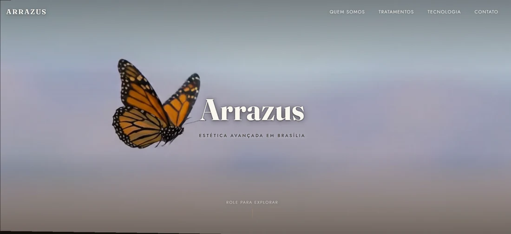
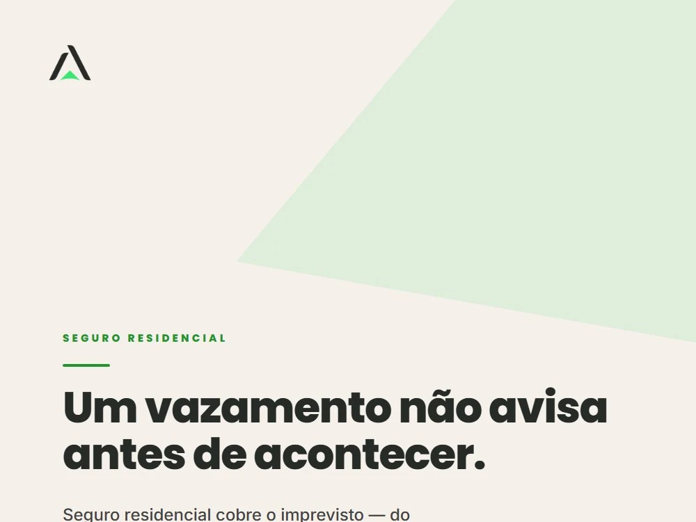
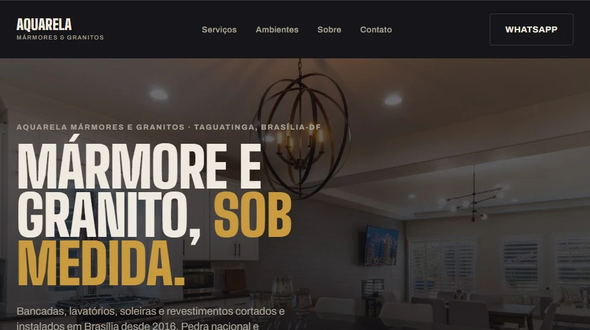
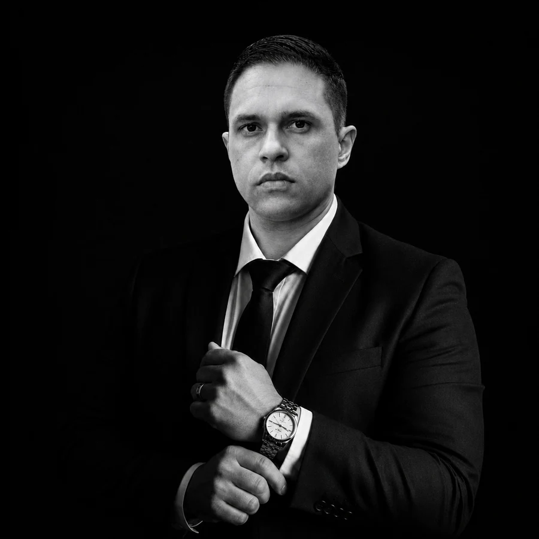

Três frentes, uma só responsável
Não é uma agência com vários atendentes repassando seu projeto. É uma pessoa só cuidando de tudo — do primeiro rascunho ao anúncio no ar.
Criação & edição de site
Site novo do zero ou reforma de um site que já existe — desenhado para o seu negócio, não montado a partir de um template genérico.
- Design sob medida, responsivo
- Textos pensados para conversão
- Publicação e domínio próprio
Criação de posts
Conteúdo para redes sociais com identidade visual consistente — sem parecer que foi feito às pressas ou copiado de um concorrente.
- Carrosséis, artes e legendas
- Calendário de publicação
- Tom de voz da sua marca
Tráfego pago
Anúncios no Meta e no Google configurados e otimizados para trazer gente que realmente pode virar cliente — não só curtidas.
- Campanhas no Meta Ads e Google Ads
- Google Meu Negócio otimizado
- Acompanhamento de resultado
Uma ideia solta vira estratégia, design e execução — sem passar por mais ninguém no meio do caminho.
Segmentos que já atendi
Alguns dos negócios que já passaram pela Solution RAO — provas reais, não maquete.

Arrazus
Site com hero em vídeo e jornada em scroll, Brasília-DF.

Avanty Seguros
Identidade visual e posts para redes sociais.

Aquarela
Site institucional com proposta comercial digital.

Sem equipe grande, sem intermediário — só quem realmente vai cuidar do seu projeto.
A Solution RAO sou eu: cada site, cada post e cada campanha passam pelas minhas mãos, do primeiro rascunho até o resultado no ar. Isso significa resposta rápida, decisão sem burocracia e um trabalho que reflete exatamente o que foi combinado.
"Prefiro atender poucos negócios bem do que muitos pela metade."
Seu concorrente tem site. Você tem desculpas.
Quem você acha que o cliente vai escolher?
Coloque sua empresa no digital antes que mais clientes escolham quem já está lá.
Quero meu site agora →